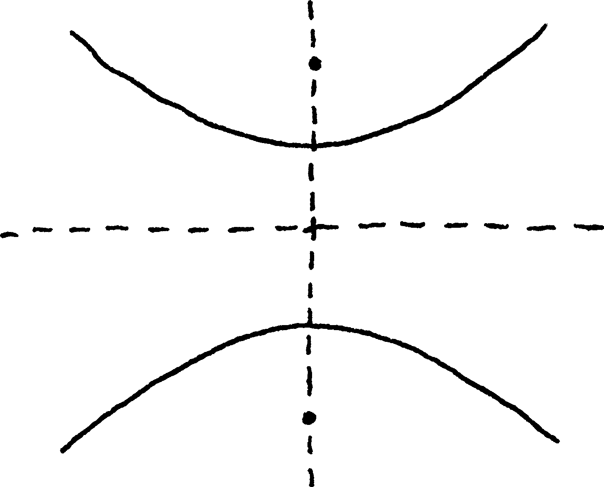
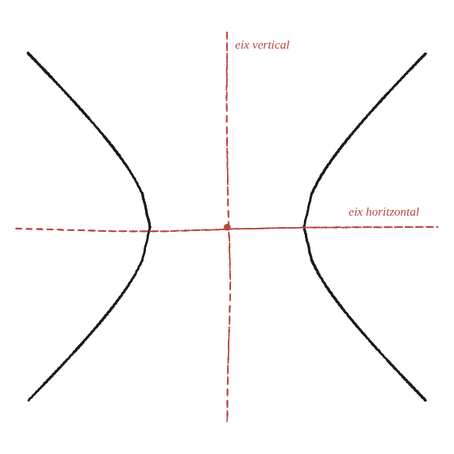

Per què les hipèrboles tenen tanta simetria?

Una raó a l'equació, no només al dibuix
No n'hi ha prou de comptar les simetries mirant el dibuix: cal una raó que es vegi directament a l'equació x²/a² − y²/b² = 1, sense necessitat de dibuixar res.
Només potències parelles
A l'equació de la hipèrbola, x i y hi apareixen només elevades al quadrat —mai soles, a la primera potència. Aquest detall, aparentment tècnic, és tota la clau.
Canviar x per −x, i per −y
Substituint x per −x a l'equació: (−x)²/a² − y²/b² = x²/a² − y²/b², exactament la mateixa equació —perquè (−x)²=x². Per tant, si un punt (x₀,y₀) satisfà l'equació, el punt (−x₀,y₀) també la satisfà: simetria respecte de l'eix vertical. Exactament el mateix argument, ara canviant y per −y, dona simetria respecte de l'eix horitzontal.

Una tercera simetria, de franc
Combinant les dues reflexions —canviar x per −x i y per −y alhora— el punt (x₀,y₀) es converteix en (−x₀,−y₀), que també satisfà l'equació pel mateix motiu. Geomètricament, aplicar dues reflexions respecte de dos eixos perpendiculars és equivalent a una rotació de 180° al voltant del seu punt de tall (el centre): una tercera simetria que ve inclosa sense haver de demostrar-la per separat.
Per què "tanta" simetria, si l'el·lipse en té les mateixes
Una el·lipse també té dos eixos i la rotació de 180°: en nombre, la hipèrbola no en té més. El que sorprèn és on porten aquelles simetries. La reflexió en l'eix vertical i la rotació de 180° no deixen cada branca al seu lloc: intercanvien les dues branques. Dibuixades, semblen dues corbes separades que no es toquen enlloc, i la simetria diu que són la mateixa corba, i que hi ha moviments del pla que converteixen l'una en l'altra exactament. Aquesta és la resposta al "tanta": no en té més que l'el·lipse, però n'hi ha que travessen un buit que semblava infranquejable.
Una hipèrbola té dos eixos de simetria (i, combinant-los, una simetria de rotació de 180° pel centre) perquè la seva equació només conté x² i y², mai x ni y a soles: substituir x per −x, o y per −y, deixa l'equació exactament igual. En nombre no en té més que una el·lipse; el que crida l'atenció és que dues d'aquestes simetries intercanvien les dues branques, que semblaven corbes separades. El mateix argument (només potències parelles ⇒ simetria) explica per què l'el·lipse té també dos eixos, i per què la paràbola (amb x a la primera potència) en té només un.
Comprovació
Amb a=3, b=4: el punt (5, 5,33) satisfà x²/9−y²/16=1 (val 1,0). Substituint (−5, 5,33), (5, −5,33) i (−5, −5,33) a la mateixa equació, els quatre casos donen exactament 1,0.